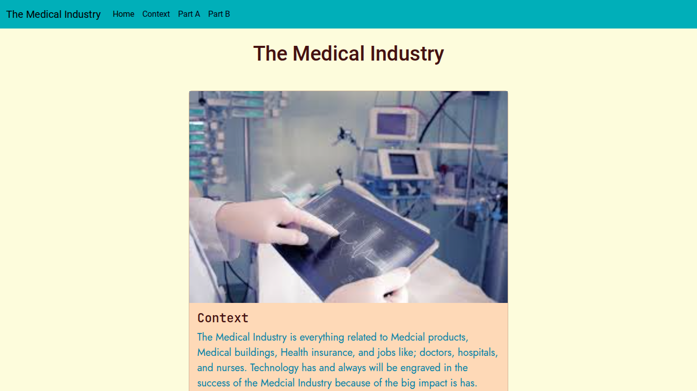

I am a student at HSTAT in the Software Engineering Program. The "Freedom Project" for SEP10 is a year-long project all about making a website that informs the viewer of the current and future innovations in the topic of my choosing. Our teacher Mr Mueller taught us different skills in order to make our end of the year project. He taught us how to use Bootstrap, Github, Git commands, HTMl, CSS throughout the year. But he told us to choose one tool to learn and use it in our project.In this project, I used everything he taught us in order to make my Project.
For my project, I chose the topic of Medical Industry. I used HTML, CSS, Bootstrap, and Github. I also chose to independently study ReactJs in order to help me make my website about the Medical Industry. In my project, I added some JavaScript which allows people to make reactive things. I used JavaScript in order to make a loading screen that works when you refresh the webstie. I also added bootstrap components that makes it eaiser for me to setup my project. I added cards to put my information and created a carousel to show images. I also used the bootstrap grid system to format my website.
This project was very hard to make because I had different problems like the carousel wouldn't work, or the card wasn't in the right size. One of the hardest problems I had while making my project is when my project couldn't be seen to the public. I was using ReactJS which isn't able to show code when using git pages which I was using. So I had to connect my ReactJs code to my git pages so it could show. I had to learn this myself and it took 5 hours to finally figure out what to do. What I had to do was put code in the repo of my code so it could connect to my code. It worked. I was so happy when it worked. Other people had the same problem so I was able to help them.
Another problem I had while doing the project is when the cards were not in the same size. I wanted them to be in the same size so it could look better and look like there was no empty space. It was hard because I didn't know what to put in my CSS code so it could be fixed. I kept trying different code, until I put the height 100%. This allowed all cards to look the same. This didn't take as long as the other challenge, but it did take some time to think about.
One of the takeaways I have is to never give up. This is because while making the project, I had many problems that I wanted to give up and take the easy way out. For example, trying to connect my code so it could show to the public. While trying to connect the code, I really wanted to give up and sometimes I was too lazy to work on it. But if I gave up, My teacher wouldn't be able to see my project and I wouldn't be able to present it. So never giving up is very important and one of the takeways I had while making this project
Another one of my takeaways I had while making this project is to always make sure to be ahead of your work because there will be challanges along the way. I learned this while coding. I gave myself 1-2 days to set up my code and project and then gave myself 2 days to code. But setting up took longer then I thought and it took me 3 days because I thought it wouldn't take that long. So I had to rush some of my code in order to finish or at least have something down. This is when I realized that Next time I should be ahead of my work because there will be challanges while working which wil set me back. But if I give myself time or if im ahead of my work, i'll have more time to work on the challanges or have more time to code and go beyond my product by adding more things like a better design.
